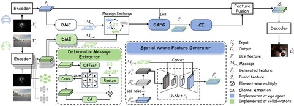
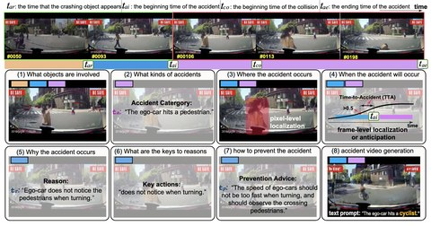

About
I am an M.S. student in Artificial Intelligence at Southwest Jiaotong University, advised by Prof. Penglin Dai. I received my B.S. in Big Data Management and Application from Chang'an University in 2024, where I was advised by Prof. Jianwu Fang.
My research focuses on automation for driving and embodied agents, 3D vision, and world models.
I am seeking research opportunities in automation (driving and embodied), and am available in mainland China, Hong Kong SAR, and Singapore. Feel free to reach me at jeffreychou777@gmail.com or jeffreychou@my.swjtu.edu.cn.
News
- May 2026 We released AnyScene. I curated the nuCraftv2 dataset and developed the Geometry-Grounded View Expansion module.
- Sep 2025 One paper accepted at NeurIPS 2025.
- Feb 2024 One paper accepted at CVPR 2024 as a Highlight.
Publications
-
2026
arXiv preprint, 2026
AnyScene: Towards Highly Controllable Driving Scene Generation at Anywhere and Beyond
-
2025

NeurIPS 2025
Pragmatic Heterogeneous Collaborative Perception via Generative Communication Mechanism
-
2024

CVPR 2024 · Highlight (top 2.8% of 11,532 submissions)
Abductive Ego-View Accident Video Understanding for Safe Driving Perception
Honors & Awards
- Oct 2025Excellent Graduate Student (2/241, top 0.8%)
- Oct 2025National Scholarship
- Jun 2023National Third Prize, the 13th National Student Market Research and Analysis Competition
- May 2023Finalist, the Mathematical Contest in Modeling (MCM)
- Mar 2023Provincial Third Prize, the 18th National Student Transportation Science and Technology Competition
Experience
- Nov 2025 – present Research Intern, Li Auto
Education
- 2024 – 2027 M.S. in Artificial Intelligence, Southwest Jiaotong University Sep 2024 – Jun 2027 (expected). Advisor: Prof. Penglin Dai
- 2020 – 2024 B.S. in Big Data Management and Application, Chang'an University Sep 2020 – Jun 2024. Advisor: Prof. Jianwu Fang